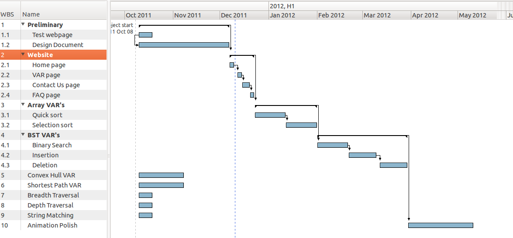

Design Document
Visual Algorithm Representation
Andrew Clear(BS Math, BA CS)
Faculty Mentor: Prof. Wolff
February, 28th 2012
Table of Contents
Visual Algorithm Representation (VAR) is a web application that will be capable of displaying, animating and explaining various computer science algorithms. This document will lay out the design of the array-based algorithms that the application will implement. Each algorithm must display: a visual representation of the array, the psuedocode of the current algorithm, a textual summary of the actions the algorithm has taken. Each display will iterate through the algorithm simultaneously and highlight where the algorithm is currently acting. Please see the requirements document for a detailed description of the application requirements.
There were two overarching options for the implementation of this project: a stand-alone application or a web-based application. After consultation with my faculty mentor and with the intention of making the application easily accessible, I chose to implement a web-based application. Given that as a starting point, the below choices were made.
JavaScript
JavaScript was chosen over a Java applet or Flash applet. The myriad of well known Flash issues made it easy to rule out.[1] JavaScript was chosen over a Java applet (or Ruby, Ruby on Rails etc). JavaScript has emerged as the core programming language of the web, and knowledge of that language is crucial for web based application development.[2] The decision to not use third party libraries (YUI, JQuery etc) was made in support of learning objectives. I want to concentrate on learning the fundamentals of JavaScript.
SVG
SVG was chosen for the visual representations over HTML5 Canvas because of the built in animation functions, and the ability to animate without complicated timers.
Each page will be broken into three sections, each contained in their own <div> element. The header section, the navigation section, and the content section.The header section will display the title of the current page, and be located at the top of the screen. The navigation section will be a static navigation menu located at the left of the screen. Any page within the website should be available from any other page via the navigation menu. The content section will contain the content relevant to that page. The content section for each currently designed page is given below. Fonts, colors and artistic design elements can be found on the prototype page located at: http://clearab.github.com/Variable-Algorithm-Representation/. Any additions outside of the designed inclusions in this document should follow a format similar to those described herein.
The content portion of each algorithm will be broken into three sections. The display section will be located at the top of the content section, and will include the necessary buttons to animate the algorithm, as well as the visual representation of the algorithm itself. The psuedocode section will be located below the display section, and to the left of the summary section. It will include the psuedocode of the currently displayed algorithm. The summary section will be located to the right of the psuedocode section and will update the user textually on the decisions the algorithm makes, as it makes them. Detailed explanations of each section are given below. For a visual explanation, please see the link to the prototype given above.
The content portion of the welcome (home) page will contain a single <div> element broken into header and paragraph elements. These will include, but are not limited to:
Each array-based VAR will the share below functionality.
The selection sort page will visually and textually represent the selection sort algorithm, using an iterative implementation on a standard array like data structure containing integer values. The array will be represented (in the default view) by 15 rectangles, with a height relative to the corresponding value of the array. Their numeric value will be displayed as well. The psuedocode that will be used for this algorithm is given below[3].
function selectionSort(array)
for(outerIndex from 0 to array.length-2)
minIndex = outerIndex
for(innerIndex from outerIndex to array.length-1)
if (array[innerIndex] < array[minIndex])
minIndex = innerIndex
swap(array[outerIndex],array[minIndex])
The quick sort page will visually and textually represent the quick sort algorithm, using a basic recursive implementation on a standard array like data structure containing integer values. The array will be represented (in the default view) by 15 rectangles, with a height relative to the corresponding value of the array. Their numeric value will be displayed as well. The quick sort psuedocode that will be used is below[3]. This quicksort algorithm was chosen because of the ease with which it may be understood, rather than the two pointer algorithm (up and down).
function partition(array,left,right,pivotIndex)
pivotValue = array[pivotIndex]
swap array[pivotIndex] and array[right]
storeIndex = left
for index from left to right
if (array[index] < pivotValue)
swap array[index] and array[storeIndex]
storeIndex = storeIndex + 1
swap array[storeIndex] and array[right]
return storeIndex
function quicksort(array,left,right)
if (left<right)
select the pivotIndex
newPivotIndex = partition(array,left,right,pivotIndex)
quicksort(array, left,newPivotIndex - 1
quicksort(array, newPivotIndex, right)
After the described work was completed, I was able to more accurately predict how long each task would take. The updated Gantt chart is given below. Note that the estimated work days for most tasks were increased, and a few of the previously required tasks are now non-required.

6. References
[1] Marc Zeedar, “Top Ten Reasons Why Flash Sucks”, May 2007
http://www.macopinion.com/index.php/site/more/top_ten_reasons_why_flash_sucks/
[2] Antonio Cangiano, “The most important programming language today”, May 2010
http://programmingzen.com/2010/05/14/the-most-important-programming-language-today
[3] “Quicksort”, Dec 2010, http://en.wikipedia.org/wiki/Quicksort